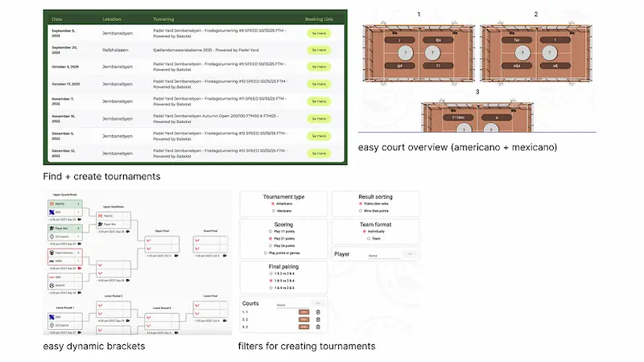

Research
Efter researchinterviews med både spillere og arrangører kom man frem til denne løsning: at udvikle en side, der både kunne bruges til at finde og oprette turneringer inden for padel.
Der var behov for en hjemmeside, hvor man både kunne oprette alle tre slags turneringer og samtidig finde dem.